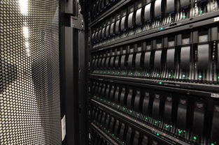
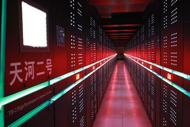

Related pictures
- 
- 
Supercomputer is a term first reported in new york World in 1929. It combines a large number of processors to process huge amounts of data, and at the same time, it operates many times faster than conventional computers. However, from a structural point of view, supercomputers and ordinary computers are very similar, and this parallel processing enables people to process huge data, thus affecting the operation of various industries. It is of great significance. In 1976, Clay Company of the United States launched the world's first supercomputer with a speed of 250 million operations per second, highlighting a country's scientific and technological strength. The supercomputer can be called a high-tech darling with myriad favors. They have made great efforts in high-tech fields such as weather forecast, gene analysis of life science, nuclear industry, military affairs, space flight and so on. They have let the scientific and technological elites of various countries compete for the top position. All countries are working on the research and development of billion-level supercomputers.
in general, supercomputers have an average operation speed of more than 10 million times per second and a storage capacity of more than 10 million bits. For example, Illiac-IV in the United States, NEC in Japan, Eugene in Europe and Galaxy in China belong to giant computers. The development of supercomputers is an important development direction of electronic computers. The level of its research and development indicates the degree of a country's scientific, technological and industrial development and reflects the strength of the country's economic development. Some developed countries are investing a lot of money, manpower and material resources to develop supercomputers with a speed of several hundred trillion times.
since China's national defense university of science and technology released the "Tianhe-1" supercomputer with a peak performance of 120.6 million times per second in 2009, China has become the second country after the United States to independently develop a supercomputer of 1 billion times. Especially in 2016, the emergence of the magic power of Taihu Lake is a sign that China has entered the world's leading position in supercomputing. Supercomputers can represent a country's comprehensive strength in the field of information and data, and even affect the country's position in science and technology in the world. Not only that, but also the actual application of supercomputers is considerable as the big data era approaches.